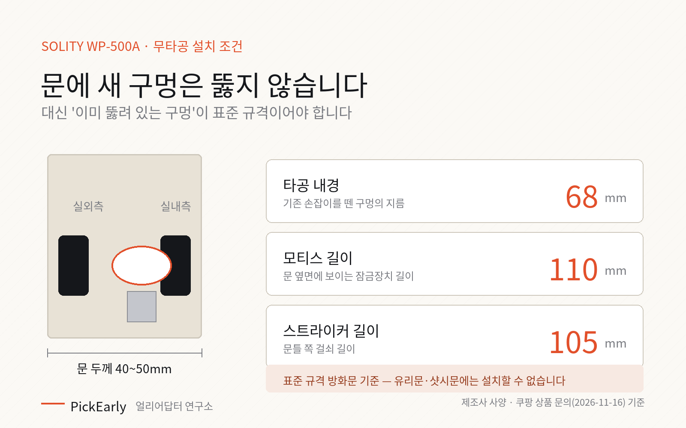

문에 구멍 뚫지 않는 3D 얼굴인식 도어락, 솔리티 WP-500A — 15만 원대 자가설치와 19만 원대 방문설치 사이
무타공은 '구멍을 하나도 안 뚫는다'가 아니라 '이미 뚫린 표준 방화문 구멍을 그대로 쓴다'입니다. 문 두께 40~50mm·타공 내경 6.8cm·모티스 11cm를 먼저 재고, 자가설치 154,140원과 방문설치 192,560원 중 무엇을 고를지 정리했습니다.
목차 · 12개 장
가격·재고·평점은 2026년 11월 27일 오후 쿠팡 상품 페이지에서 직접 확인한 값입니다. 쿠폰과 판매자에 따라 달라집니다. 이 글은 제품을 빌려 써 본 후기가 아니라, 제조사 공식 사양과 사용설명서, 쿠팡 상품평 987건을 정리한 '구매 전 판단 자료'입니다.

이미지: 쿠팡 상품 페이지(판매자 쿠팡(주))
들어가며 — 현관에서 손이 하나 더 필요한 순간
장을 보고 돌아와 양손에 봉지를 들고 섰을 때, 아이 손을 잡은 채로 문 앞에 섰을 때, 우산을 든 손이 젖어 있을 때. 도어락 앞에서 사람이 멈추는 이유는 늘 같습니다. 손이 하나 더 필요한데, 그 한 손으로 비밀번호를 눌러야 한다는 것입니다.
지문인식은 이 문제를 절반만 풉니다. 손이 젖어 있거나 장갑을 끼고 있으면 다시 비밀번호로 돌아와야 하니까요. 그래서 나온 것이 얼굴인식 + 푸시풀 손잡이 조합입니다. 문 앞에 서면 문이 먼저 사람을 알아보고, 손잡이는 미는 동작만 하면 됩니다.
솔리티(웰콤) WP-500A는 이 조합을 15만 원대에 내놓은 모델입니다. 2023년 2월에 나온 제품인데도 지금 상품평이 987건 쌓였고, 그중 91%가 최고·좋음입니다. 오래 팔린 만큼 규격·설치·배터리에서 걸리는 지점도 구체적으로 드러나 있습니다. 이 글은 그 지점부터 정리했습니다.
'무타공'이 뜻하는 것 — 새 구멍을 안 뚫는다는 말
도어락을 바꿀 때 가장 부담스러운 건 기계값이 아니라 문에 새 구멍을 뚫는 일입니다. 기존 도어락을 떼면 문에는 구멍 자국이 남고, 다른 규격의 제품을 달면 그 옆에 새 구멍을 내야 합니다.
무타공은 그 반대입니다. 기존 손잡이를 떼고, 그 구멍에 새 도어락을 그대로 끼웁니다. 문에 새로 손대지 않으니 문 손상이 적고, 이사할 때 원래 손잡이로 되돌리기도 상대적으로 수월합니다. 전세·월세 세입자가 이 방식을 찾는 이유가 여기 있습니다.
다만 '구멍을 하나도 안 뚫는다'는 뜻은 아닙니다. 이미 뚫려 있는 구멍이 이 제품의 규격과 맞아야 합니다. 쿠팡 상품 문의에 달린 판매자 답변(2026-11-16)은 조건을 이렇게 못 박습니다.
- 표준 규격 방화문일 것
- 기존 손잡이를 뗀 타공 내경 6.8cm
- 문 옆면 모티스 길이 11cm
- 문틀 스트라이커 길이 10.5cm
여기에 제조사 사양으로 문 두께 40~50mm가 더해집니다. 이 네 가지가 맞지 않으면 '무타공'이어도 설치가 안 되거나, 보강판 같은 별도 자재가 필요해집니다.
현관문이 유리문이나 샷시문이라면 이 제품은 대상이 아닙니다. 같은 솔리티의 다른 모델(WP-530B·WP-501 등) 상품명에도 "유리문/샷시문 불가"가 붙어 있습니다. 설치 전에 문 종류부터 확인하세요.
한 줄 결론부터
"문에 손대지 않고 얼굴로 여는 현관"을 15만 원대에 얻는 제품입니다. 대신 세 가지를 먼저 확인해야 합니다.
- 우리 집 현관문이 표준 규격 방화문인가 — 아니면 이 제품이 아니라 다른 방식(주키형·보강판 세트)을 봐야 합니다.
- 누가 설치할 것인가 — 154,140원(고객직접설치)과 192,560원(방문설치). 차액 38,420원.
- 스마트폰으로 열고 싶은가 — 그 기능은 와이파이 모듈을 따로 사야 열립니다(38,400원).
이 세 가지가 정리되면, 남는 판단은 하나입니다. 지문인식이 없는 도어락이어도 괜찮은가. 얼굴·비밀번호·카드키로 충분한 집이라면 이 가격대에서 대안이 많지 않습니다.
1. 어떤 제품인가 — 스펙 3분 정리
제조사 공식 사양 (솔리티 제품 페이지·사용설명서 기준)
| 항목 | 솔리티 WP-500A |
|---|---|
| 형태 | 무타공 푸시풀 (손잡이 일체형) |
| 여는 방식 | 얼굴인식 · 비밀번호 · 스마트키(카드) · 스마트폰 앱 |
| 설치 조건 | 방화문, 문 두께 40~50mm |
| 얼굴 등록 | 최대 100개 |
| 스마트키 등록 | 최대 100개 |
| 비밀번호 | 4~12자리 (등록 4개까지) |
| 전원 | DC 6V — 1.5V AA 알카라인 건전지(LR6) |
| 비상전원 | DC 9V 알카라인(6LF22) 별도 구입 |
| 크기 | 가로 79 × 세로 303 × 깊이 34mm (스펙 정리 자료 기준, 제조사 페이지에는 수치 미표기) |
| 색상 | 브론즈 |
| 출시 | 2023년 02월 · 제조 주식회사 솔리티(인천공장) |
| KC 인증 | B223A5005-20013J · R-R-HG0-WP-500A |
안전 기능으로는 허수(가짜 번호) 입력, 내부 이중 잠금, 침입·파손 경보, 고온 감지 경보, 전기충격 무력화, 장난 방지 잠금이 들어갑니다. 편의 기능은 자동/수동 잠금 설정, 생활 방수, 건전지 교체 알림, 음량 설정, 에티켓(무음) 기능입니다. 문이 닫히면 약 2초 뒤 자동으로 잠기는 것이 기본 설정입니다.
3D 얼굴인식 — 지문인식은 없습니다
이 제품의 이름은 '3D 얼굴인식'이지만, 정확히는 얼굴을 3D로 읽어 위조 사진에 속지 않게 하는 방식입니다. 제조사는 '3D 얼굴인식 렌즈'와 'AI 딥러닝'을 내세웁니다.
중요한 건 반대쪽입니다. 이 제품에는 지문인식이 없습니다. 쿠팡 상품 정보에도 "지문인식 기능: 불가능"으로 표기됩니다. 손가락으로 여는 데 익숙한 집이라면, 얼굴이 안 잡히는 날(마스크·모자·역광) 비밀번호로 돌아가야 한다는 뜻입니다. 지문이 꼭 필요하면 같은 가격대의 지문형 모델(솔리티 WP-530B 12만~15만 원대, 게이트맨·코콤 지문형)을 봐야 합니다.
푸시풀 손잡이 — 문 여는 동작이 바뀝니다
기존 도어락은 손잡이를 돌려서 열었습니다. 푸시풀은 밖에서는 당기고, 안에서는 밀면 열립니다. 손목을 비트는 동작이 사라지고, 손에 힘을 줄 필요가 없습니다. 짐을 든 손으로 문을 밀고 들어가는 동작이 자연스러워지는 이유입니다.
2. 154,140원과 192,560원 — 38,420원의 정체
2026년 11월 27일 쿠팡 기준, 같은 상품에 두 가지 선택이 붙어 있습니다.
| 항목 | 고객직접설치 | 방문설치 |
|---|---|---|
| 결제 금액 | 154,140원 (정가 194,000원, 쿠폰 20% 적용) | 192,560원 (자가설치가 + 38,420원) |
| 누가 설치하나 | 구매자 본인 | 설치 기사 방문 |
| 걸리는 시간 | 본인 손에 따라 다름 | 20~30분(구매평 기준) |
| 설치 후 문제 생기면 | 제품 하자와 설치 책임을 구분하기 어려움 | 설치 이력이 남음 |
| 반품 | 설치 전이면 가능 | 기사 방문 후 하자 판정이 갈림 |
이 38,420원은 '책임'의 값입니다
38,420원은 시간을 사는 돈이 아닙니다. 설치에 문제가 생겼을 때 누가 책임지는지를 사는 돈입니다. 상품평에서 이 차이가 실제로 드러납니다.
- 자가설치 후 고장 — "래치가 망가져서 안 열리는 바람에 못 들어가고 있습니다. … 자가설치 했으니 도움을 줄 수 없고 알아서 업자 불러서 해체하라네요. 물론 비용도 전부 제가 부담" (2024-07-08, 최저 평가)
- 방문설치 기사 편차 — "제품 자체는 만족하는데 방문 설치 업체의 설치에 문제가 있으나 인정하지 않고" (2024-12-30) / "처음에 설치 기사분은 굉장히 친절하셨습니다. 우리집 대문이 오래되었는데 … 문틀 옆 틀의 깊이가 맞지 않아 반품했습니다" (2026-09-30)
즉 자가설치는 내 손이 맞으면 가장 싸고, 틀리면 가장 비쌉니다. 반대로 방문설치는 기사가 와서 규격을 보고 맞춰 주지만, 기사에 따라 안내 수준이 다릅니다. 한 구매평은 "사용법과 안면인식등록법을 문의하니 자기는 모른다고 하고 그냥 갔습니다"라고 적었습니다. 설치만 해 주는 기사이고, 설정은 본인이 해야 한다는 점은 미리 알아 두셔야 합니다.
그래서 어떤 집에 어느 쪽인가
고객직접설치(154,140원)가 맞는 집
- 드라이버와 수평계로 손잡이를 직접 바꿔 본 경험이 있다
- 기존 도어락이 표준 규격(타공 내경 6.8cm)임을 눈으로 확인했다
- 당장 급하지 않고, 주말 반나절을 쓸 수 있다
- 제품을 먼저 받아 문에 대 보고 규격이 안 맞으면 반품할 생각이 있다
방문설치(192,560원)가 맞는 집
- 현관문이 오래되었거나, 문틀 깊이·모티스 규격이 확실하지 않다
- 부모님 댁처럼 설정(얼굴 등록)까지 해 드려야 하는 집
- 도어락은 보안과 직결되므로 내 손으로는 부담스럽다
- 설치 후 문제가 생겼을 때 따질 창구가 필요하다
두 경우 모두, 설치 전에 솔리티 고객센터(1588-3641) 로 문 사진(문 두께·옆면·문틀)을 보내 규격 확인을 받는 것이 가장 확실합니다. 상품 문의 답변도 설치 관련 문의는 이 번호로 안내하고 있습니다.
3. 사기 전에 확인할 5가지
① 문 두께와 세 가지 규격

픽얼리 제작 — 제조사 사양과 쿠팡 상품 문의 답변(2026-11-16) 기준
줄자 하나로 확인할 수 있는 네 가지입니다.
| 확인 항목 | 기준 | 확인 방법 |
|---|---|---|
| 문 두께 | 40~50mm | 문을 열고 옆면(모티스가 보이는 면)의 두께를 잰다 |
| 타공 내경 | 6.8cm | 기존 손잡이를 뗀 구멍의 지름 |
| 모티스 길이 | 11cm | 문 옆면에 나와 있는 잠금장치 길이 |
| 스트라이커 길이 | 10.5cm | 문틀 쪽 걸쇠 길이 |
두꺼운 방화문(50mm 초과)이나 얇은 실내문은 대상이 아닙니다. 이 수치가 애매하면 그 자체가 방문설치를 선택할 이유가 됩니다.
② 얼굴인식의 물리적 조건 — 45cm, 그리고 키
얼굴인식은 카메라와의 거리에 민감합니다. 사용설명서 기준 조건은 이렇습니다.
- 얼굴과 도어락의 거리: 45cm 이상 ~ 1m 이하
- 등록 가능 신장: 120~190cm (제품 설치 높이에 따라 달라짐)
- 인체감지 센서 반응 거리: 80cm 이내 — 이 안으로 들어오면 화면이 켜지고 얼굴 인식 대기 상태가 됩니다
- 마스크·모자·선글라스·안대로 얼굴을 가리면 인증 실패
- 쌍둥이처럼 얼굴이 매우 비슷하면 등록된 얼굴로 열릴 수 있음
실사용 후기가 이 조건을 그대로 확인해 줍니다. 키 134cm 아이는 "완전 잘 되는데", 딱 120cm인 둘째는 "아직 인식이 살짝 어려운 편"이었습니다. 초등 저학년 이하 아이가 혼자 다닌다면, 아이 키를 먼저 재 보세요.
③ 스마트폰 앱으로 열려면 모듈이 따로 필요합니다
제품 소개에는 '스마트폰 앱'이 여는 방식으로 적혀 있지만, 앱으로 문을 여는 기능은 와이파이 모듈을 장착해야 동작합니다. 사용설명서의 '별도 판매' 목록에 와이파이 모듈·블루투스 모듈·리모컨·수신 모듈이 들어 있습니다.
- 솔리티 IoT 도어락 모듈 WB-100C — 38,400원 (쿠팡, 같은 상품 페이지의 '함께 구매한 상품')
- WP-500A + 와이파이 모듈 패키지 — 195,800원 (별도 상품으로 판매)
즉 15만 원짜리로 사면 앱은 못 씁니다. 출입 기록 확인·원격 개폐가 목적이라면 패키지 가격(195,800원)을 기준으로 비교해야 합니다. 그리고 쿠팡 상품 문의 답변은 "로켓배송 상품의 구성품 일부 또는 부품만을 별도로 판매하지 않는다"고 안내합니다. 모듈은 따로 사야 합니다.
④ 건전지·비상전원·카드키 수량
- AA 알카라인 건전지 8개로 동작합니다(구매평·설치 안내 기준). 인체감지 센서와 얼굴 카메라가 계속 대기하기 때문에 소모가 빠른 편입니다. 한 구매평은 사용 50일 만에 방전됐다고 적었습니다(아래 사례).
- 건전지가 떨어지면 9V 건전지(6LF22)를 비상 전원 단자에 대고 비밀번호로 열 수 있습니다. 이 9V 건전지는 동봉되지 않습니다.
- 카드키는 기본 2장 구성입니다(구매평 기준). 가족 수가 3명 이상이면 카드키를 추가로 사 두는 것이 안전합니다.
한 구매평은 이 지점에서 실제로 문 앞에 갇혔습니다. 50일 만에 배터리가 방전되었는데 교체 알림이 오지 않았고, 비밀번호 키패드 일부가 먹히지 않았으며, 카드키를 들고 나가지 않아 가족이 올 때까지 밖에서 기다려야 했습니다. 알림이 항상 먼저 오지는 않는다는 뜻입니다.
⑤ 쿠폰과 시세 — 154,140원은 '오늘의 값'입니다
이 상품은 쿠폰가로 판매됩니다. 2026년 11월 27일 기준 정가 194,000원에 20% 쿠폰이 붙어 154,140원이었고, 쿠팡 파트너스 카탈로그에는 같은 상품이 159,800원으로 표시되기도 합니다. 쿠폰은 수시로 바뀌고, "다른 판매자 보기(13)"처럼 판매자가 여러 곳이면 가격도 달라집니다. 결제 직전 금액을 기준으로 판단하세요.
배송은 로켓배송(판매자 쿠팡(주))·무료배송·무료반품입니다. 다만 반품은 설치·사용 전에만 수월합니다. 교환·반품 안내에도 "설치 완료되어 상품의 가치가 훼손된 경우"가 제한 사유로 적혀 있습니다. 단순변심 반품 비용은 와우회원은 무료, 비회원은 2,500~5,000원입니다.
참고로 같은 결제 화면에서 쿠팡안심케어(무상보증 연장) 를 함께 살 수 있습니다. 3년 2,500원, 5년 2,700원(보상 한도 10만 원)입니다. 도어락은 5년쯤 쓰는 제품이라 2,700원짜리는 사실상 보험료 수준입니다.
4. 상품평 987건에서 갈린 지점
2026년 11월 27일 기준 상품평은 987건, 분포는 최고 779 · 좋음 126 · 보통 35 · 별로 12 · 나쁨 35입니다. 만족(최고+좋음)이 91.7%, 불만(별로+나쁨)이 47건(4.8%) 입니다. 항목별 평가는 디자인 78% '아주 만족', 잠금 기능 79% '견고하고 안전해요', 설치 난이도 46% '쉬워요'입니다.
좋았다는 쪽이 공통으로 말한 것
① 양손이 자유로워진다
가장 많이 반복되는 문장은 "양손에 짐 들고 있을 때 진가를 발휘한다"입니다. 한 구매평은 "양손짐쌉가능~! 얼굴인식 신세계" 라고 적었고, 다른 구매평은 "비번 누를 필요도 없고 핸드폰도 안 꺼내도 되니까 진짜 편해요"라고 했습니다. 어두운 현관에서도 잘 인식된다는 관찰도 여러 건 있습니다.
② 이사·전세에서 무타공이 결정적이었다
이사 경험이 있는 구매자의 후기가 가장 구체적입니다. "일반 도어락처럼 문을 뚫어야 설치되는 구조라서 이사갈 집에는 그대로 두고 나와야 했거든요. … 이번엔 꼭 무타공 도어락을 찾기로 마음먹었고" — 문을 뚫지 않는다는 점 자체가 구매 이유가 된 사례입니다.
③ 부모님 댁·아이 있는 집
"어머니 댁이 주택이다 보니 텃밭이나 마당을 수시로 오가시는데, 그때마다 카드키를 챙겨 나가시는 게 번거로워 보여" 구매했다는 후기, "우리 엄마는 기계 잘 못 다루시는데도 얼굴만 대면 열리는 게 너무 신기하고 편하다"는 후기가 있습니다. 비밀번호를 외우지 않아도 된다는 점이 고령 사용자에게 실질적인 장점이 됩니다.
아쉽다는 쪽 47건이 지적한 것
① 역광·주간 환경에서 인식이 안 되는 경우
가장 무거운 불만입니다. "안면인식을 사용법대로 했는데 안됩니다. … '지금 낮이라 역광으로 작동이 안될 수 있으니 저녁에 해보시고 안되면 AS접수 하세요' 합니다" (2025-07-01). 다른 구매평은 "얼굴 인식할려면 벽에 기댈정도로 멀리 떨어져야 겨우 인식합니다"라고 적었습니다. 현관 앞에 창이나 외부 조명이 강하게 들어오는 집은 이 위험을 먼저 생각해야 합니다.
② 얼굴 등록이 한 번에 안 되는 경우
"처음에 어머니 얼굴을 등록하고 나서 문을 열려고 하니까 얼굴인식이 도통 안 먹히더라고요. … 등록해 둔 얼굴을 삭제하고 처음부터 다시 재등록을 진행했습니다. 다행히 재등록을 마치고 나니까 그제야 착착 잘 인식하면서 작동하기 시작하더라고요" — 재등록으로 해결된 사례입니다. 등록할 때 마스크·모자를 벗고, 여러 각도로 다시 등록해 보는 것이 권장됩니다.
③ 설치 기사에 따라 안내 수준이 다르다
"설치만 해 주는 기사"라는 지적이 반복됩니다. 설정(얼굴·비밀번호·카드키 등록)은 본인 몫이라는 전제로 방문설치를 고르세요.
④ 배터리 방전과 그 순간의 잠김
앞서 본 50일 후기입니다. 교체 알림이 오지 않은 채 방전되고, 키패드 일부가 먹히지 않으며, 카드키가 없으면 들어갈 수 없습니다. 비상용 9V 건전지 한 개를 현관 서랍에 두는 것으로 이 위험은 거의 사라집니다.
⑤ 모티스·케이블 간섭
"외부 도어락 케이블이 모티스 구멍을 통과할 수 없음. 진짜 열받아서… 결국 모티스 회피해서 어렵게 설치" (2024-04-18, 자가설치). 무타공이라도 내부 배선이 지나갈 여유가 필요합니다. 이 사례가 자가설치의 위험을 가장 잘 보여 줍니다.
5. 이런 집에 권합니다 / 권하지 않습니다
권하는 집
- 표준 규격 방화문이 있는 아파트·주택의 현관
- 전세·월세라 문에 새 구멍을 내기 부담스러운 집
- 양손에 짐을 들고 다니는 일이 잦은 1인 가구·맞벌이
- 부모님 댁 도어락을 바꿔 드리려는 경우 (비밀번호·카드키를 챙길 필요가 줄어듭니다)
- 아이가 초등 고학년 이상이라 얼굴 높이가 130cm를 넘는 집
권하지 않는 집
- 유리문·샷시문, 문 두께가 40mm 미만이거나 50mm를 넘는 문
- 지문인식이 꼭 필요한 집 (이 제품에는 없습니다)
- 현관에 역광이 강하게 들어오는 집 — 얼굴인식 실패 사례가 몰리는 조건입니다
- 초등 저학년 이하 아이가 혼자 출입하는 집 (120cm 전후는 인식이 불안정했다는 후기)
- 앱으로 원격 개폐·기록 확인이 목적인 집 — 모듈값 38,400원을 더한 195,800원 패키지와 비교해야 합니다
6. 구매 링크
솔리티 WP-500A — 고객직접설치 154,140원 확인하기 (쿠팡) →제휴 링크 · 구매 가격은 동일합니다
같은 상품 — 방문설치 192,560원으로 보기 (쿠팡) →제휴 링크 · 구매 가격은 동일합니다
위 링크의 상품 페이지에서 설치 방식(고객직접설치 / 방문설치) 을 고르면 금액이 바뀝니다. 쿠폰을 먼저 받아야 154,140원이 적용되니, 결제 화면의 최종 금액을 꼭 확인하세요.
자주 묻는 질문
Q. 우리 집 문에 설치할 수 있는지 어떻게 알 수 있나요?
문 두께(40~50mm)와 기존 손잡이를 뗀 구멍의 지름(6.8cm)을 재고, 문 옆면 모티스(11cm)와 문틀 스트라이커(10.5cm)를 확인하세요. 확실하지 않으면 문 사진을 솔리티 고객센터 1588-3641 로 보내 확인받는 것이 가장 빠릅니다.
Q. 얼굴인식이 싫으면 끌 수 있나요?
네. 인체감지(IR) 센서를 해제하면 얼굴인식 대기 상태로 들어가지 않습니다. 이 경우 번호판을 터치한 뒤 얼굴을 인식시키면 됩니다. 쿠팡 상품 문의 답변도 "인체감지 센서 설정 및 해제 기능을 통해 얼굴인식 기능을 끄고 사용할 수 있다"고 안내합니다.
Q. 아파트 월패드(비디오폰)와 연동되나요?
연동은 제조사 문의가 필요한 사안입니다. 쿠팡 상품 문의 답변은 "비디오폰(월패드) 연동은 제조사로 문의가 필요하며, 추가 설치 비용은 발생하지 않는다"고 안내합니다. 단지마다 배선이 달라, 이사 온 집에서 바로 되는지는 현장 확인이 필요합니다.
Q. 이사할 때 떼서 가져갈 수 있나요?
무타공 방식이라 새 구멍을 뚫지 않았기 때문에 원래 손잡이로 되돌리기 수월합니다. 다만 집주인과 원상복구를 어떻게 할지는 별도로 협의하세요. 임차 계약에서 도어락 교체를 허용하는지도 함께 확인하시는 편이 안전합니다.
Q. 문이 닫히면 자동으로 잠기나요?
기본 설정이 문을 닫은 뒤 약 2초 후 자동 잠금입니다. 수동 잠금으로 바꿀 수 있고, 내부 이중 잠금(3초) 기능도 있습니다.
마치며
이 제품을 한 문장으로 정리하면 "현관에서 손을 하나 덜 쓰게 해 주는 15만 원" 입니다.
구매 판단은 세 가지로 좁혀집니다.
- 문이 표준 규격 방화문인가 — 두께 40~50mm, 타공 내경 6.8cm. 여기서 걸리면 다른 제품입니다.
- 38,420원을 낼 것인가 — 자가설치는 내 손이 맞으면 싸고, 틀리면 고장 대응까지 내 몫이 됩니다.
- 지문인식이 없어도 되는가 — 얼굴·비밀번호·카드키로 충분하고, 앱은 모듈값을 더 낼 각오가 있는가.
세 가지가 맞으면, 이 가격대에서 '얼굴인식 + 무타공 + 푸시풀'을 한 번에 갖춘 선택지는 많지 않습니다. 반대로 하나라도 걸린다면, 그 지점이 바로 이 제품의 구매평에서 아쉬움이 나온 자리입니다.
이 포스팅은 쿠팡 파트너스 활동의 일환으로, 이에 따른 일정액의 수수료를 제공받습니다.
참고 자료 (2026년 11월 27일 확인)
- 솔리티 공식 제품 페이지 — WP-500A 사양(설치 조건·등록 개수·정격전압), 안전·편의 기능 목록, solitykorea.com/kr/products/products/show?GOOD_SEQ=211
- 솔리티 WP-500A·WP-501 사용설명서(PTMP9010ONTA REV.01) — 얼굴 인식 거리 45cm~1m, 등록 신장 120~190cm, 인체감지 센서 설정, 자동 잠금 2초, 초기 비밀번호, 별도 판매 모듈 목록
- 쿠팡 상품 페이지(상품번호 7283829679) — 2026-11-27 가격 154,140원·정가 194,000원, 방문설치 +38,420원, 상품평 987건과 별점 분포, 필수 표기 정보(KC 인증·출시년월·제조자)
- 쿠팡 상품 문의 판매자 답변(2026-11-16) — 표준 규격 방화문, 타공 내경 6.8cm, 모티스 11cm, 스트라이커 10.5cm, 설치 문의 1588-3641
- 쿠팡 상품 문의 답변(2026-11-08·11-10·11-12) — 월패드 연동, 부품 별도 판매 불가, 인체감지 센서로 얼굴인식 끄기
- 쿠팡 상품평 — 2024-04-04(이사·무타공), 2024-07-08(자가설치 후 래치 고장), 2024-10-24·12-16(50일 사용 후 배터리 방전), 2025-07-01(역광 인식 실패), 2026-09-30(문틀 규격·기사 응대), 2026-07-26(부모님 댁 설치)
※ 본문의 가격·할인율·재고·도착 예정일은 2026년 11월 27일 확인 시점의 값이며, 쿠폰·판매자·재고에 따라 달라집니다. 제품 사양은 제조사 공식 자료와 사용설명서를 인용한 것이고, 실제 사용 환경(문 규격·조명·키)에 따라 체감이 다를 수 있습니다. 구매평 인용은 작성자의 표현을 그대로 옮긴 것입니다.
이어서 읽기
 쿠팡 · AI 스마트 가전
쿠팡 · AI 스마트 가전